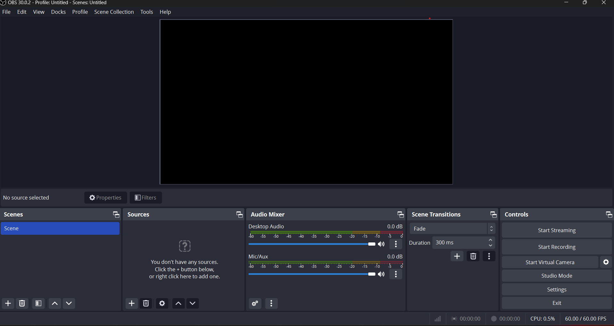

OBS Studio Interface

1. Scene and Sources:
- Scenes: OBS Studio organizes your content into scenes, which are like different sets or layouts. You can create multiple scenes to switch between them during your broadcast or recording.
- Sources: Within each scene, you add sources. Sources can include your display or specific windows, webcam feeds, images, text, and more. Each source represents an element in your scene.
2. Controls Toolbar:
At the bottom of the interface, there's a toolbar with controls for starting and stopping your stream or recording. It includes buttons for Start Streaming, Start Recording, Studio Mode, and other essential functions.
3. Preview and Program Windows (Studio Mode):
OBS Studio features a Studio Mode that allows you to preview changes before making them live. The interface includes Preview and Program windows, where the Preview window shows changes you're making, and the Program window reflects what the audience sees.
4. Audio Mixer:
The Audio Mixer section allows you to control the audio levels of different sources. You can adjust the volume, mute, or solo specific audio sources.
5. Scenes Transitions:
OBS Studio provides various transition options for switching between scenes smoothly. Common transitions include Cut, Fade, and Swipe.
6. Controls Panel:
On the right side of the interface, there's a panel with controls for configuring scenes and sources. This panel includes options for adding new scenes, duplicating sources, and managing the order of sources.
7. Settings:
The Settings window allows you to configure OBS Studio's general settings, video and audio settings, and output settings. Here, you can also set up streaming platforms, adjust hotkeys, and more.
8. Status Bar:
At the bottom of the interface, there's a status bar providing information on the current status of your stream or recording, dropped frames, and encoding information.
9. Controls for Studio Mode:
In Studio Mode, you have additional controls for transitioning between scenes and managing the preview and program windows.
10. Source Properties:
When you select a source in the scene, the properties panel on the left allows you to configure specific settings for that source, such as resolution, position, and cropping.